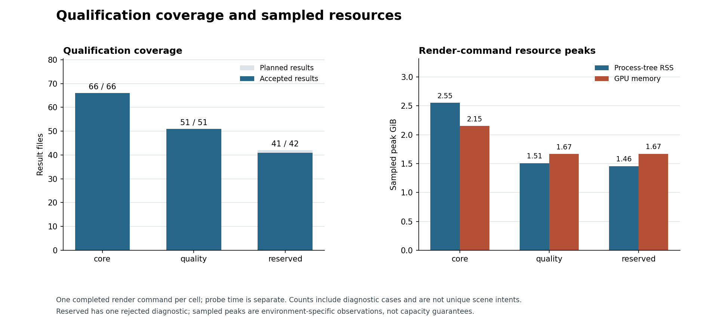
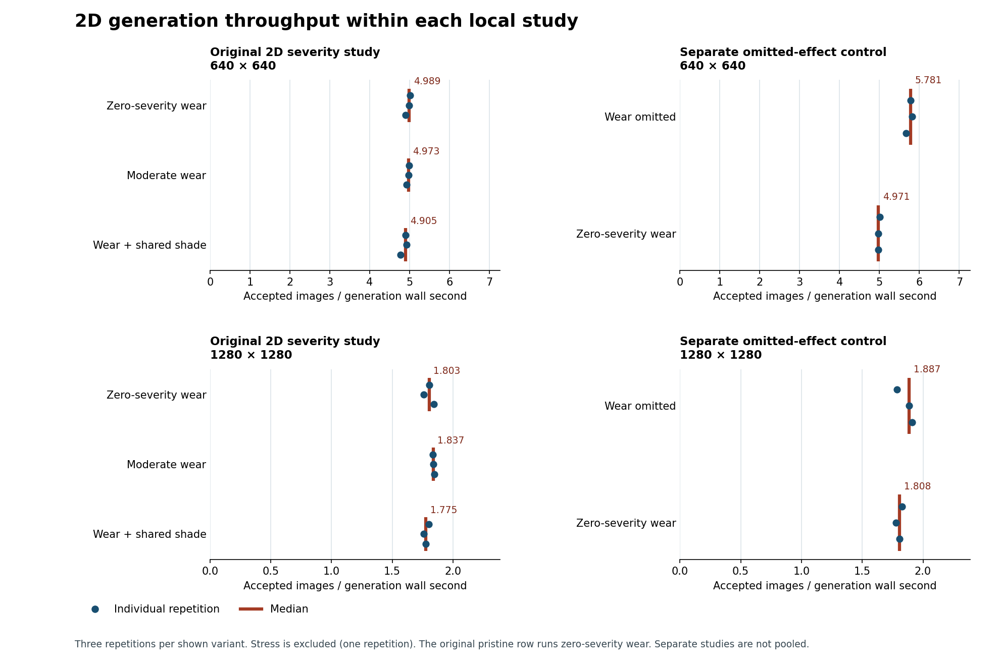
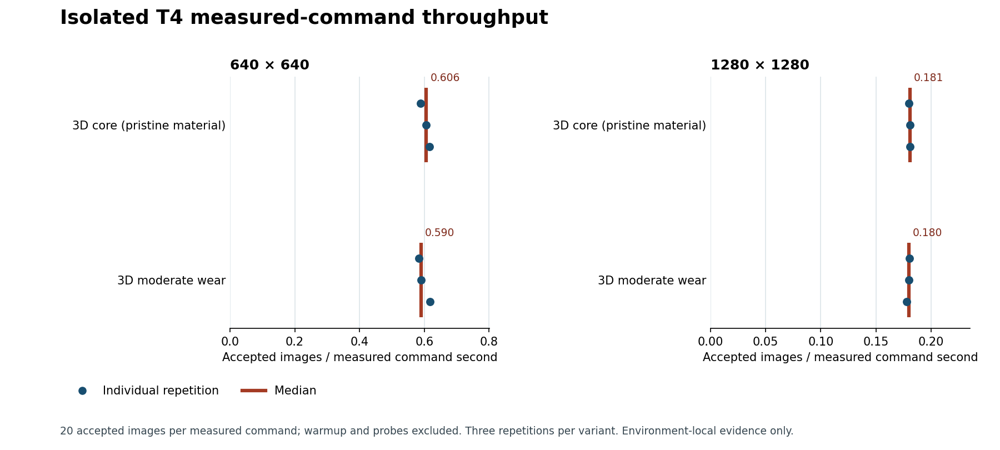
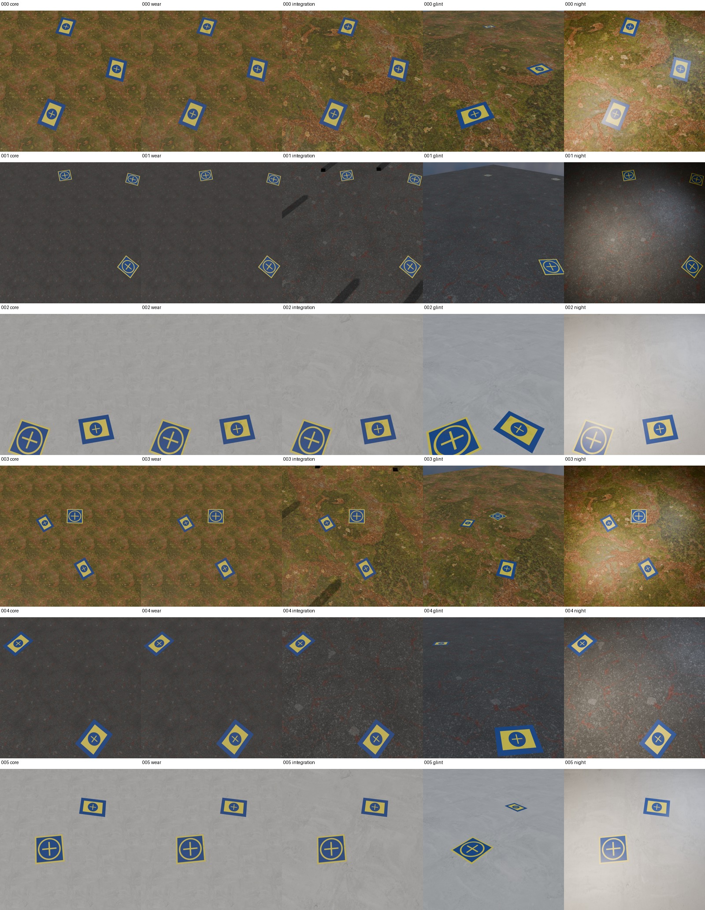
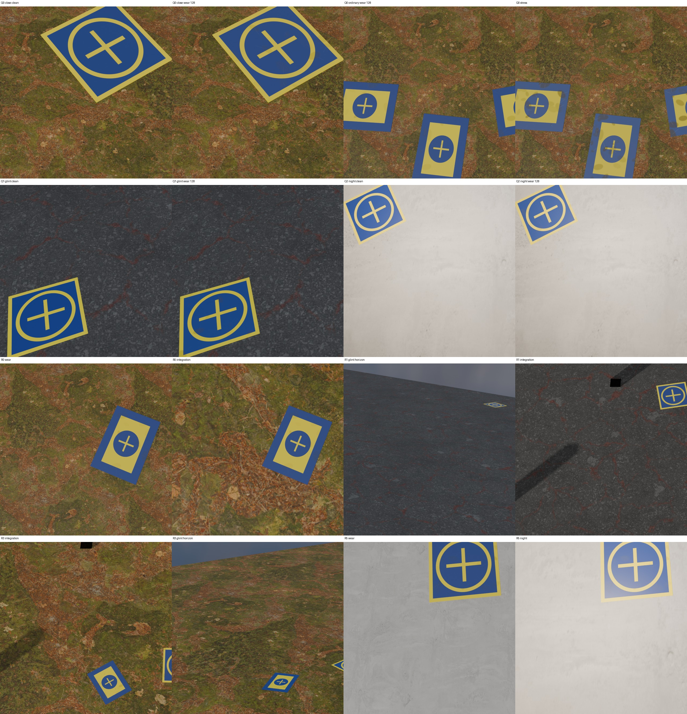
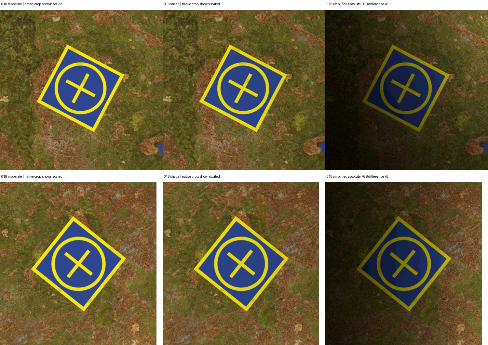
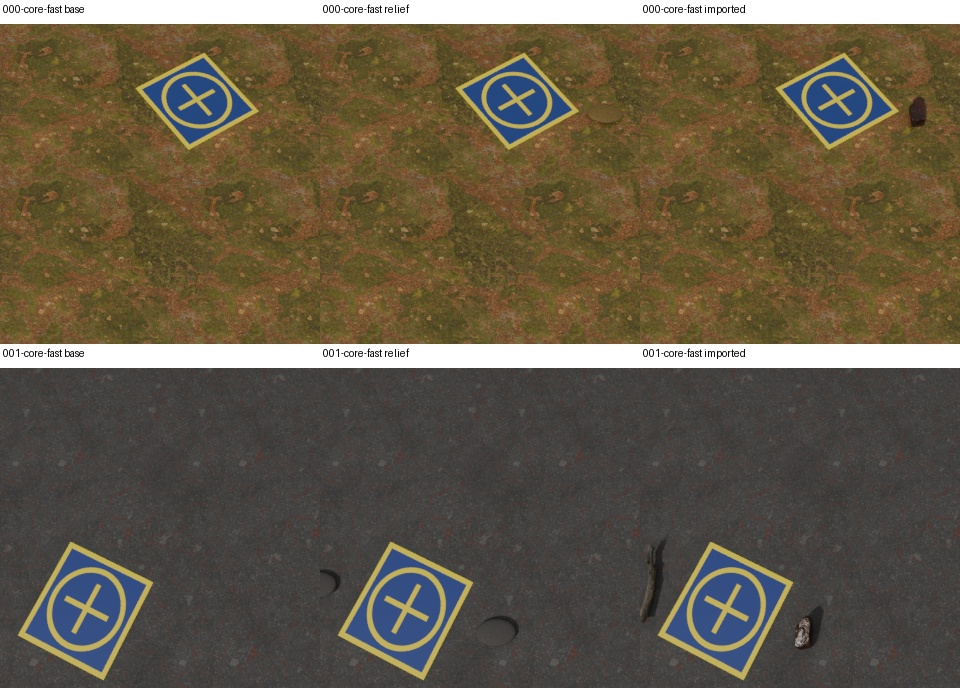

Compact source-backed evidence page. The recorded evidence is summarized here. The full interactive local report contains paired views and the source inspector.
Study narrative · Compact reviewed data and source hashes

| Cell | Accepted / planned | Visible annotations |
|---|---|---|
| Local CPU smoke | 10 / 10 | — |
| 3D / study / development-r0 | 39 / 39 | 85 |
| 3D / study / core-final | 66 / 66 | 185 |
| 3D / study / quality-final | 51 / 51 | 113 |
| 3D / study / reserved-final | 41 / 42 | 97 |
| 3D / qualification / study | 9 / 9 | 20 |
Reserved diagnostic overlap was rejected after eight attempts below the visible-support floor when present in the data. Complete command status is distinct from accepted outputs.
The original 2D pristine recipe runs zero-severity wear. The separate control compares an omitted operation with that zero-severity operation; both retain neutral lighting and premultiplied resampling. Values are environment-local, with three paired repetitions; one 1280-pixel pair was negative.


The isolated summary and its per-cell resource records were recovered, but the full remote archives from the last phase were lost when the allocation was reclaimed. Its recorded budget total is a lower bound; conservative reservations can make the final charge higher. The earlier timing pass overlapped archive compression and transfer and is excluded.
These are medians of paired changes, not the ratio of the separate median rates.
Moderate wear remains opt-in, shared shade remains experimental, and the contextual caster recipe is exploratory. Glint and night are specialist scenarios. Dark blocky or pole-like features appear in some caster views; their origin is unverified. A separate diagnostic recorded the caster objects as camera-invisible, which does not establish the source of those features.
Local relief and imported-mesh prototypes remain exploratory. Their four paired CPU jobs did not alter stored target masks; contact and visibility remain uncertain. The remote T4 prototype outcome was not recovered.




Synthetic visual evidence does not establish real-image or detector benefit. Timings across different hosts are not causal speed comparisons.